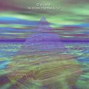

Home Artist links Label link

D'Arcana - As Worlds They Rise And Fall
| Artist: | D'Arcana |
| Title: | As Worlds They Rise And Fall |
| Label: | Lemuria MusicLem000402 |
| Length(s): | 66 minutes |
| Year(s) of release: | 2005 |
| Month of review: | [01/2006] |
Line up
Jay Tausig - vocals, guitars, synths, cello, sax, drums
Shelby Snow - bass, vocals, percussion
James Camblin - guitars, vocals, synth
Tracks
| 1) | Sunrise | 5.14
|
| 2) | Lilith | 2.26
|
| 3) | Earthbound | 2.33
|
| 4) | Awakening | 2.05
|
| 5) | Vertigo | 4.22
|
| 6) | Casting Shadows | 4.42
|
| 7) | Adrift | 3.13
|
| 8) | Shimmer | 5.40
|
| 9) | Waive The Sales | 1.51
|
| 10) | By This River | 3.57
|
| 11) | Wrong Number (for All) | 3.24
|
| 12) | Balance | 3.14
|
| 13) | As Worlds They Rise & Fall | 23.31
|
Summary
The music
D'Arcana's music is often of a complex type, the different chords tripping across eachother. Musically they remind me of some Yes and Peter Hammill stuff, but mostly Roy Harper stuff, especially in their most deliberate moments. The fact that the main vocalist timbre (don't ask which of the three guys this is) lies close to Harper's plays an important role in the likeness, but the way of singing (diction), the use of instruments and the sort of compositions remind me strongly of Harper's Heal The World. D'Arcana do fail in tension building, however. And this is where the difference with the references comes in: D'Arcana have an artificial feel, never convince in being able to play with their music, their compositions, very much sounding like there is all hard work at play, resulting in tracks that are nigh constantly plodding. Doing the hard work is commandable, necessary probably, but it shouldn't sound like that.
Sure, we get some dreamy sections with gentle guitar and floating moog-like synthillation, and I guess these are the more flowing tracks on the album. Then there's Casting Shadows: a Waters dominated Pink Floyd type composition, featuring acoustic guitar as well as the familiar near spoken Waters diction of the lyrics. Most of the time, however, the tracks flow into eachother, hardly marking their borders.
Conclusion
With complex music, more so than with simpler music, the melody should be a point of attention. The composer has to constantly be aware that the melody should not be drowned out by the complexity. Unfortunately, D'Arcana did not do well enough in this respect. The result of that is a string of ideas and more or less complex bits and pieces strung together into tracks. These tracks are not necessarily songs. Too often they are mainly ideas strung together. That does not necessarily mean that time passes in an unpleasant way, but the music never steps out of the deliberate feel, never flows, never takes in the listener. And in the end it manages to irritate this listener (but that could be me). With that the album has become more an elaborate (and granted: high level) practice session, then it has become an asset for those in the outside world.
© Roberto Lambooy